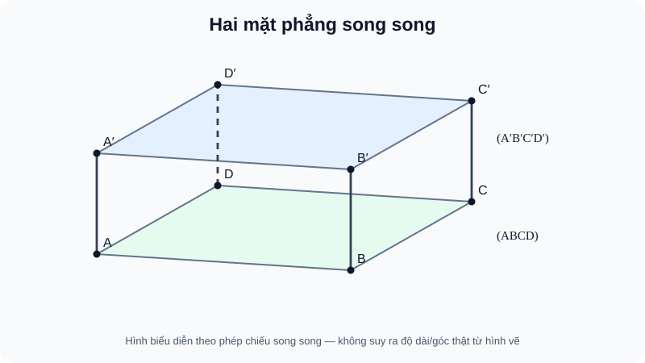
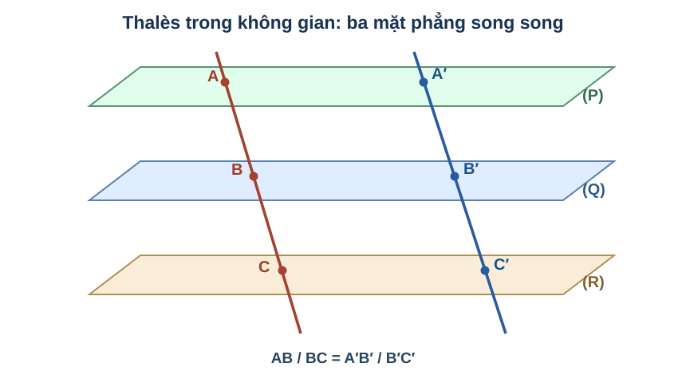

Bài 13. Hai mặt phẳng song song
TOÁN 11 · CHƯƠNG IV · KẾT NỐI TRI THỨC
Hai mặt phẳng không giao nhau, điều kiện và tính chất song song, Thalès trong không gian, cấu tạo của hình lăng trụ và hình hộp.
1. Khám phá kiến thức
Khi một người đầu bếp thái củ quả thành những lát phẳng, những mặt cắt lý tưởng có thể song song với nhau. Trong hình học, điều quan trọng không phải hai miếng hữu hạn có chạm nhau không mà là hai mặt phẳng kéo dài vô hạn có điểm chung hay không. Từ đây ta học bốn mục: cách nhận biết hai mặt song song, điều kiện/tính chất để chứng minh, các tỉ số Thalès và cách những quan hệ đó tạo nên lăng trụ–hình hộp.
1.1. Hai mặt phẳng song song
Hãy xem hai mặt đáy của một chiếc hộp: một mặt ở trên, một mặt ở dưới. Hai mặt nằm trong hai mặt phẳng khác nhau nhưng không có điểm chung, nên song song. Nếu xoay nghiêng một mặt phẳng, hai mặt dù được vẽ tách nhau vẫn có thể giao nhau theo một đường ở xa phần đã vẽ. Nếu cả hai tên cùng chỉ một mặt phẳng, chúng trùng nhau chứ không song song.

Nhớ ba vị trí của hai mặt phẳng: trùng nhau; phân biệt và cắt nhau theo một đường; hoặc phân biệt và song song. Một điểm chung đã đủ loại quan hệ song song, nhưng chưa cho biết đường giao cụ thể nếu chưa biết điểm chung thứ hai. Nếu hai mặt phẳng song song, mọi đường thẳng nằm trong mặt này đều song song với mặt kia, vì chúng không có điểm chung với mặt kia.
Vận dụng. Hai mặt phẳng \((P),(Q)\) phân biệt cùng chứa điểm \(M\). Chúng có thể song song không? Giao của chúng là gì?
Đối chiếu
Lời giải: Không. Vì có điểm chung \(M\), chúng không song song; hai mặt phân biệt cắt nhau theo một đường thẳng đi qua \(M\).
Kiểm lỗi
Đừng nhầm hai hình bình hành trên trang giấy với hai mặt phẳng vô hạn. Hai mặt phẳng phân biệt không thể chỉ có một điểm chung.
1.2. Điều kiện và tính chất của hai mặt phẳng song song
Một đường chưa đủ. Giả sử \((P)\) cắt \((Q)\) theo đường \(c\). Ngay trong \((P)\) có thể chọn một đường \(a\ne c\) song song \(c\). Vì \(a\) không cắt \(c\) và mọi điểm chung của \((P),(Q)\) đều nằm trên \(c\), nên \(a\parallel(Q)\). Như vậy \((P)\) có một đường song song \((Q)\), nhưng chính hai mặt vẫn cắt nhau!
Vì sao hai đường cắt nhau thì đủ? Nếu \((P)\) chứa hai đường cắt nhau \(a,b\), và cả \(a,b\) đều song song \((Q)\), thì hai mặt không thể trùng nhau (vì \(a\parallel(Q)\)). Giả sử \((P)\) cắt \((Q)\) theo \(c\). Theo tính chất giao tuyến Bài 12, cả \(a\parallel c\) và \(b\parallel c\), điều ấy trái với \(a\) và \(b\) cắt nhau. Vậy \((P)\parallel(Q)\). Điều kiện hai đường cắt nhau bảo đảm ta không chỉ kiểm một hướng.
Tính duy nhất. Qua một điểm \(A\notin(P)\) có đúng một mặt phẳng song song với \((P)\). Vì vậy hai mặt phẳng phân biệt cùng song song một mặt phẳng thứ ba phải song song nhau: nếu chúng có điểm chung, tính duy nhất sẽ buộc chúng trùng nhau.
Giao tuyến qua mặt thứ ba. Nếu \((P)\parallel(Q)\) và \((R)\) cắt \((P)\) theo \(a\), thì \((R)\) cũng cắt \((Q)\) theo \(b\), với \(a\parallel b\). Trên hình hộp, một mặt bên cắt hai đáy theo hai cạnh đối song song. Kết quả giúp định hướng giao tuyến và thiết diện khi dựng hình.
Vận dụng. Chóp \(S.ABCD\): \(M,N,P,Q\) là trung điểm \(SA,SB,SC,SD\). Chứng minh \(M,N,P,Q\) đồng phẳng và mặt qua chúng song song đáy.
Đối chiếu
Lời giải: \(MN\parallel AB\) và \(NP\parallel BC\) do là đường trung bình các tam giác \(SAB,SBC\). Hai đường \(MN,NP\) cắt tại \(N\), đều ở ngoài đáy và song song mặt đáy; do đó \((MNP)\parallel(ABCD)\). Tương tự \((NPQ)\parallel(ABCD)\). Hai mặt ấy có điểm chung \(N\) và cùng song song đáy, theo tính duy nhất trùng nhau; suy ra bốn điểm \(M,N,P,Q\) đồng phẳng.
Kiểm lỗi
Một đường song song mặt đáy chưa đủ chứng minh cả mặt song song. Phải tìm hai đường cắt nhau trong chính mặt cần xét, mỗi đường song song đáy.
1.3. Định lí Thalès trong không gian
Trong tam giác, những đường thẳng song song cắt hai cạnh tạo các đoạn tương ứng tỉ lệ. Tương tự, ba mặt phẳng đôi một song song cắt hai cát tuyến (mỗi đường cắt cả ba mặt phẳng) lần lượt tại \(A,B,C\) và \(A',B',C'\) sẽ tạo những cặp đoạn tỉ lệ. Nếu mặt phẳng thứ hai nằm giữa hai mặt còn lại, ta so đoạn từ mặt thứ nhất tới mặt thứ hai với đoạn từ mặt thứ hai tới mặt thứ ba, theo cùng thứ tự trên cả hai cát tuyến.

Ví dụ cụ thể. Nếu \(AB=4\) cm, \(BC=6\) cm và \(A'B'=10\) cm, tỉ số \(4/6=10/B'C'\) cho \(B'C'=15\) cm. Trên hai cát tuyến, các độ dài tuyệt đối có thể khác, nhưng tỉ số hai đoạn theo cùng cặp mặt luôn bằng nhau.
Trong tứ diện \(S.ABC\), một mặt phẳng \((MNK)\parallel(ABC)\) cắt \(SA,SB,SC\) lần lượt tại \(M,N,K\). Khi đó \(SM/SA=SN/SB=SK/SC\): mặt song song đáy cắt các cạnh bên theo cùng tỉ phần từ đỉnh \(S\). Cần giữ cùng điểm gốc \(S\), không nhầm \(SM/MA\) với \(SM/SA\).
Vận dụng. Ba mặt phẳng song song cắt hai cát tuyến tạo \(AB=3\) cm, \(BC=5\) cm, \(A'B'=9\) cm. Tìm \(B'C'\) và nêu lí do lập tỉ số như vậy.
Đối chiếu
Lời giải: \(\dfrac{AB}{BC}=\dfrac{A'B'}{B'C'}\Rightarrow3/5=9/x\Rightarrow x=15\) cm. Hai đoạn ở tử đều nằm giữa cùng hai mặt đầu, hai đoạn mẫu giữa cùng hai mặt sau.
Kiểm lỗi
Phải ghép đúng đoạn tương ứng và dùng ba mặt phẳng thực sự song song; không tự đặt tỉ số nếu chỉ có hai mặt song song.
1.4. Hình lăng trụ và hình hộp
Lấy hai đa giác bằng nhau nằm trên hai mặt phẳng song song sao cho các đoạn nối các đỉnh tương ứng song song nhau. Hình gồm hai đa giác đáy và các hình bình hành nối cạnh tương ứng gọi là hình lăng trụ. Hai đa giác là mặt đáy, các hình bình hành là mặt bên, còn các đoạn nối đỉnh tương ứng là cạnh bên. Các cạnh bên đôi một song song và bằng nhau.
Nếu đáy là hình bình hành, lăng trụ đó gọi là hình hộp. Hình hộp có sáu mặt hình bình hành, các mặt đối diện song song. Có thể chọn bất kì cặp mặt đối diện nào làm hai đáy. Hình hộp không bắt buộc là hình hộp chữ nhật, vì hình hộp tổng quát không yêu cầu các cạnh bên vuông góc với đáy.
Bốn đường chéo của hình hộp: Các đoạn \(AC',BD',CA',DB'\) nối các đỉnh đối diện. Trong hình bình hành \(ACC'A'\), hai đường chéo \(AC',CA'\) có cùng trung điểm. Các hình bình hành \(ABC'D'\) và \(ADC'B'\) cũng có đường chéo \(AC'\); đường chéo còn lại của chúng lần lượt là \(BD',DB'\). Vì vậy cả bốn đường chéo cùng đi qua trung điểm của mỗi đường, gọi là tâm hình hộp. Chúng không nhất thiết dài bằng nhau.
Vận dụng. Lăng trụ tam giác có bao nhiêu đỉnh, cạnh, mặt? Đáy của một lăng trụ tứ giác là hình bình hành thì tên hình là gì?
Đối chiếu
Lời giải: Lăng trụ tam giác có \(6\) đỉnh, \(9\) cạnh và \(5\) mặt (2 tam giác đáy, 3 hình bình hành bên). Lăng trụ có đáy hình bình hành là hình hộp: 8 đỉnh, 12 cạnh, 6 mặt.
Kiểm lỗi
Đếm cả cạnh khuất; đừng gọi hình lăng trụ nào cũng là lăng trụ đứng, và đừng xem hình hộp tổng quát đương nhiên là hình hộp chữ nhật.
2. Kiến thức SGK
2.1. Hai mặt phẳng song song
Hai mặt phẳng \((P),(Q)\) gọi là song song nếu chúng không có điểm chung. Viết \((P)\parallel(Q)\). Hai mặt phẳng phân biệt có điểm chung thì cắt nhau theo một đường thẳng; hai mặt trùng nhau không gọi song song.
Nhận biết: Nếu \((P)\parallel(Q)\), mọi đường thẳng nằm trong \((P)\) đều song song với \((Q)\). Ba vị trí là trùng nhau, cắt nhau, song song. Không dùng hình bình hành hữu hạn được vẽ để đoán quan hệ của hai mặt phẳng vô hạn.
2.2. Điều kiện và tính chất của hai mặt phẳng song song
Nếu mặt phẳng \((P)\) chứa hai đường thẳng cắt nhau \(a,b\) và \(a\parallel(Q)\), \(b\parallel(Q)\), thì \((P)\parallel(Q)\). Một đường song song \((Q)\), hoặc hai đường song song nhau, không đủ thay cho hai đường cắt nhau.
Qua điểm \(A\notin(P)\), có một và chỉ một mặt phẳng đi qua \(A\) và song song với \((P)\).
Nhận xét suy ra từ tính duy nhất: Nếu hai mặt phẳng phân biệt cùng song song với một mặt phẳng thứ ba, thì chúng song song nhau. Nếu hai mặt có điểm chung, tính duy nhất buộc chúng trùng nhau.
Nếu \((P)\parallel(Q)\) và mặt \((R)\) cắt \((P)\) theo \(a\), thì \((R)\) cũng cắt \((Q)\) theo \(b\), với \(a\parallel b\). Các đường \(a,b\) nằm trong cùng mặt \((R)\).
Cách dùng: Muốn chứng minh hai mặt song song → chọn hai đường cắt nhau trong mặt thứ nhất và chứng minh từng đường song song với mặt thứ hai. Muốn dựng thiết diện qua hai mặt song song → xác định một giao tuyến rồi dựng giao tuyến tương ứng song song với nó trong mặt cắt.
2.3. Định lí Thalès trong không gian
Ba mặt phẳng đôi một song song chắn trên hai cát tuyến những đoạn thẳng tương ứng tỉ lệ. Nếu chúng cắt hai đường lần lượt tại \(A,B,C\) và \(A',B',C'\), với \(B,B'\) nằm trên mặt phẳng ở giữa, thì \(AB/BC=A'B'/B'C'\).
Với các điểm cắt phân biệt và \(B\) nằm giữa \(A,C\), \(B'\) nằm giữa \(A',C'\): \(\displaystyle\frac{AB}{BC}=\frac{A'B'}{B'C'}\) và \(\displaystyle\frac{AB}{AC}=\frac{A'B'}{A'C'}\).
Phải giữ đúng cặp mặt phẳng của từng đoạn; không tráo vị trí mốc trung gian.
Áp dụng vào hình chóp: Nếu \((MNK)\parallel(ABC)\) cắt \(SA,SB,SC\) theo \(M,N,K\), thì \(SM/SA=SN/SB=SK/SC\) (các điểm trong cạnh), suy ra độ dài theo cùng tỉ phần từ đỉnh.
2.4. Hình lăng trụ và hình hộp
Hình lăng trụ có hai đa giác đáy tương ứng nằm trên hai mặt phẳng song song, các cạnh bên nối đỉnh tương ứng đôi một song song, các mặt bên là hình bình hành. Hai đa giác là mặt đáy; các đoạn nối đỉnh tương ứng là cạnh bên.
Các cạnh bên song song và bằng nhau; các mặt bên là hình bình hành; hai đa giác đáy song song và bằng nhau. Không bắt buộc các cạnh bên vuông góc đáy.
Hình lăng trụ có đáy là hình bình hành gọi là hình hộp. Hình hộp có 6 mặt hình bình hành, 8 đỉnh, 12 cạnh; các cặp mặt đối diện song song.
Tính chất hình hộp: Bất kì cặp mặt đối diện nào cũng có thể chọn làm hai đáy. Bốn đường chéo \(AC',BD',CA',DB'\) cùng đi qua trung điểm mỗi đường (tâm hình hộp). Chúng không nhất thiết bằng nhau. Có thể kiểm điều này bằng các hình bình hành \(ACC'A'\), \(ABC'D'\), \(ADC'B'\), có chung đường chéo \(AC'\).
Số lượng: Lăng trụ đáy \(n\)-giác có \(2n\) đỉnh, \(3n\) cạnh, \(n+2\) mặt. Lăng trụ tam giác: 6 đỉnh, 9 cạnh, 5 mặt; hình hộp: 8 đỉnh, 12 cạnh, 6 mặt.
3. Ví dụ
3.1. Khi nào hai mặt phẳng song song?
Đề bài. Hai mặt phẳng phân biệt \((P),(Q)\) có điểm chung \(A\). Chúng có thể song song không?
Phân tích: Kiểm ngay định nghĩa không có điểm chung. Nếu có điểm chung, hai mặt phân biệt cắt nhau theo giao tuyến.
Lời giải. Không. \(A\in(P)\cap(Q)\), nên hai mặt không song song; chúng giao nhau theo một đường thẳng qua \(A\).
Kiểm lại: Hai mặt phân biệt không thể chỉ có đúng một điểm chung.
3.2. Dấu hiệu hai đường cắt nhau trong một mặt phẳng
Đề bài. Cho bốn điểm \(A,B,C,D\) không đồng phẳng. Qua \(A\) dựng \(m\parallel BC\) và \(n\parallel BD\). Chứng minh \(\operatorname{mp}(m,n)\parallel(BCD)\).
Phân tích: \(BC,BD\) cắt nhau ở \(B\), nên hai đường \(m,n\) qua \(A\) có hai phương khác nhau và cũng cắt nhau tại \(A\). Kiểm mỗi đường không nằm trong mặt \((BCD)\).
Lời giải. \(A\notin(BCD)\), do đó \(m,n\not\subset(BCD)\). Vì \(m\parallel BC\subset(BCD)\), \(n\parallel BD\subset(BCD)\), suy ra \(m\parallel(BCD)\), \(n\parallel(BCD)\). Hai đường \(m,n\) cắt nhau tại \(A\), nên mặt \(\operatorname{mp}(m,n)\parallel(BCD)\).
Kiểm lại: Điều kiện bốn đỉnh không đồng phẳng bảo đảm \(A\notin(BCD)\); điều kiện \(m\ne n\) theo hai hướng \(BC,BD\) khác nhau.
3.3. Phản ví dụ: Một đường song song chưa đủ
Đề bài. Hai mặt phẳng \((P),(Q)\) cắt nhau theo đường \(c\). Chọn \(a\subset(P)\), \(a\ne c\) và \(a\parallel c\). Chứng minh \(a\parallel(Q)\) nhưng \((P)\) không song song \((Q)\).
Phân tích: \(a\) không gặp \(c\), mà mọi điểm chung của \((P),(Q)\) thuộc \(c\). Vậy \(a\) không gặp \((Q)\), dù hai mặt đang giao nhau.
Lời giải. Nếu \(a\) có điểm chung \(M\) với \((Q)\), do \(a\subset(P)\), \(M\in(P)\cap(Q)=c\), mâu thuẫn \(a\parallel c\). Do đó \(a\parallel(Q)\). Nhưng \((P)\cap(Q)=c\ne\varnothing\), nên \((P)\) và \((Q)\) không song song.
Kiểm lại: Hai đường cùng hướng và cùng song song một mặt cũng không đủ để suy cả mặt song song: cần hai đường cắt nhau.
3.4. Trung điểm bốn cạnh của hình chóp
Đề bài. Cho hình chóp \(S.ABCD\), \(M,N,P,Q\) là trung điểm \(SA,SB,SC,SD\). Chứng minh \(M,N,P,Q\) đồng phẳng và \((MNP)\parallel(ABCD)\).
Phân tích: Tìm hai đường trung bình cắt nhau trong \((MNP)\) để dùng dấu hiệu; sau đó dùng tính duy nhất mặt song song qua điểm \(N\) hoặc \(P\).
Lời giải. \(MN\parallel AB\), \(NP\parallel BC\). Hai đường \(MN,NP\) cắt nhau tại \(N\), đều song song \((ABCD)\), nên \((MNP)\parallel(ABCD)\). Tương tự \(NP\parallel BC\), \(PQ\parallel CD\) và \(NP,PQ\) cắt ở \(P\), nên \((NPQ)\parallel(ABCD)\). Hai mặt \((MNP)\), \((NPQ)\) cùng chứa \(P,N\) và cùng song song đáy, bởi tính duy nhất chúng trùng nhau. Do đó \(Q\in(MNP)\), tức bốn điểm đồng phẳng.
Kiểm lại: \(MN,NP\) là hai đường phân biệt cắt nhau; các điểm trung điểm không thuộc đáy, nên các đường trung bình song song đáy chứ không nằm trong đáy.
3.5. Giao tuyến của mặt thứ ba
Đề bài. Cho \((P)\parallel(Q)\). Một mặt phẳng \((R)\) cắt \((P)\) theo đường \(a\). Xác định vị trí \((R)\) với \((Q)\), và hai giao tuyến.
Phân tích: Dùng tính chất một mặt cắt hai mặt song song, không suy từ hình vẽ.
Lời giải. \((R)\) cũng cắt \((Q)\) theo một giao tuyến \(b\). Hai đường \(a,b\) cùng nằm trong \((R)\), thuộc hai mặt phẳng song song nên không có điểm chung, suy ra \(a\parallel b\).
Kiểm lại: \((R)\) phải cắt \((P)\) chứ không trùng \((P)\); khi đó mới có giao tuyến \(a\) xác định.
3.6. Thalès: Tìm đoạn tương ứng thứ hai
Đề bài. Ba mặt phẳng đôi một song song cắt hai cát tuyến theo thứ tự \(A,B,C\) và \(A',B',C'\). Biết \(AB=4\) cm, \(BC=6\) cm, \(A'B'=10\) cm. Tính \(B'C'\).
Phân tích: Hai tử số là đoạn giữa cùng hai mặt đầu, hai mẫu là đoạn giữa cùng hai mặt sau.
Lời giải. \(\frac{AB}{BC}=\frac{A'B'}{B'C'}\Rightarrow\frac4{6}=\frac{10}{B'C'}\). Suy ra \(B'C'=15\) cm.
Kiểm lại: \(4/6=10/15=2/3\); kết quả là một độ dài nên có đơn vị cm.
3.7. Cắt các cạnh bên tứ diện theo cùng tỉ phần
Đề bài. Tứ diện \(S.ABC\), \((MNK)\parallel(ABC)\) cắt \(SA,SB,SC\) tại \(M,N,K\). Biết \(SM/SA=1/3\), \(SB=15\) cm, \(SC=18\) cm. Tìm \(SN,SK\).
Phân tích: Vì hai mặt song song, các đường thẳng \(SA,SB,SC\) cắt chúng theo tỉ số tương ứng; có thể nhìn qua định lí Thalès phẳng trong các mặt tam giác.
Lời giải. \(\frac{SM}{SA}=\frac{SN}{SB}=\frac{SK}{SC}=\frac13\), nên \(SN=15/3=5\) cm và \(SK=18/3=6\) cm.
Kiểm lại: Các kết quả nhỏ hơn cạnh chứa chúng; không nhầm \(SN/NB\) với \(SN/SB\).
3.8. Đếm đỉnh, cạnh và mặt của lăng trụ
Đề bài. Lăng trụ tam giác \(ABC.A'B'C'\) có bao nhiêu đỉnh, cạnh, mặt? Hình hộp \(ABCD.A'B'C'D'\) có các mặt thuộc loại hình gì?
Phân tích: Đếm hai đáy và các mặt bên; không bỏ sót cạnh khuất trong hình chiếu.
Lời giải. Lăng trụ tam giác có \(6\) đỉnh, \(9\) cạnh và \(5\) mặt (2 tam giác, 3 hình bình hành). Hình hộp có \(8\) đỉnh, \(12\) cạnh, \(6\) mặt; cả sáu mặt là hình bình hành.
Kiểm lại: Hình hộp tổng quát không nhất thiết là hình hộp chữ nhật: không tự suy các góc vuông từ hình vẽ.
4. Lỗi thường gặp và cách tự khắc phục
Mở từng mục để xem dấu hiệu, vì sao sai và cách sửa.
4.1. Nhìn hai mặt hữu hạn không chạm rồi gọi song song
Dấu hiệu: Hai hình bình hành tách nhau trên giấy nên kết luận hai mặt phẳng song song.
Vì sao sai: Các mặt phẳng vô hạn có thể kéo dài và cắt nhau theo một đường.
Cách sửa: Dùng định nghĩa không có điểm chung hoặc chứng minh bằng dấu hiệu toán học.
4.2. Chỉ có một đường song song mặt phẳng thứ hai
Dấu hiệu: \(a\subset(P),a\parallel(Q)\) nên nói \((P)\parallel(Q)\).
Vì sao sai: \((P)\) vẫn có thể cắt \((Q)\) theo \(c\parallel a\).
Cách sửa: Tìm hai đường cắt nhau trong \((P)\), từng đường song song \((Q)\).
4.3. Quên điều kiện “phân biệt” ở tính chất cùng song song mặt thứ ba
Dấu hiệu: Hai mặt cùng song song \((R)\) nên gọi chúng song song dù có thể trùng nhau.
Vì sao sai: Mặt phẳng song song qua một điểm ngoài \((R)\) là duy nhất; hai mặt cùng qua điểm ấy có thể là một.
Cách sửa: Kiểm hai mặt phân biệt; nếu có điểm chung thì kết luận trùng, nếu phân biệt thì song song.
4.4. Ghép sai cặp đoạn trong Thalès không gian
Dấu hiệu: Biết các độ dài 4, 6, 10 rồi tính \(B'C'=4\cdot10/6\).
Vì sao sai: Tráo các khoảng giữa hai cặp mặt khác nhau.
Cách sửa: Viết đúng \(\frac{AB}{BC}=\frac{A'B'}{B'C'}\) và kiểm thứ tự các mặt trước khi thay số.
4.5. Gọi mọi hình lăng trụ là hình lăng trụ đứng
Dấu hiệu: Cho các cạnh bên phải vuông góc đáy mới được gọi lăng trụ.
Vì sao sai: Lăng trụ tổng quát chỉ yêu cầu hai đáy song song và các cạnh bên tương ứng song song, bằng nhau.
Cách sửa: Phân biệt lăng trụ với lăng trụ đứng; hình hộp tổng quát không bắt buộc là hình hộp chữ nhật.
4.6. Mặt thứ ba cắt mặt đầu nhưng lại cho song song mặt cuối
Dấu hiệu: \((P)\parallel(Q)\), \((R)\) cắt \((P)\) nhưng \((R)\parallel(Q)\).
Vì sao sai: Tính chất cho \((R)\) cũng cắt \((Q)\), hai giao tuyến song song nhau.
Cách sửa: Gọi \(a=(R)\cap(P)\), \(b=(R)\cap(Q)\), rồi dùng \(a\parallel b\).
Học tiếp: Core và Luyện tập Bài 13 · Tự luận Chương IV · Tự kiểm tra cuối chương.
Nguồn: SGK Toán 11 Kết nối tri thức, tập một, Bài 13 trang in 88–94. Bốn mục gốc: Hai mặt phẳng song song; Điều kiện và tính chất; Định lí Thalès trong không gian; Hình lăng trụ và hình hộp. Đã đối chiếu phần văn bản SGK số hóa; ảnh render đầy đủ trang PDF chưa có bằng chứng. Hình hộp dùng SVG canonical B13 từ main, hình Thalès là SVG mới của AUTHORING. Hai tab cùng dùng nguồn hình, chú giải theo mục đích.